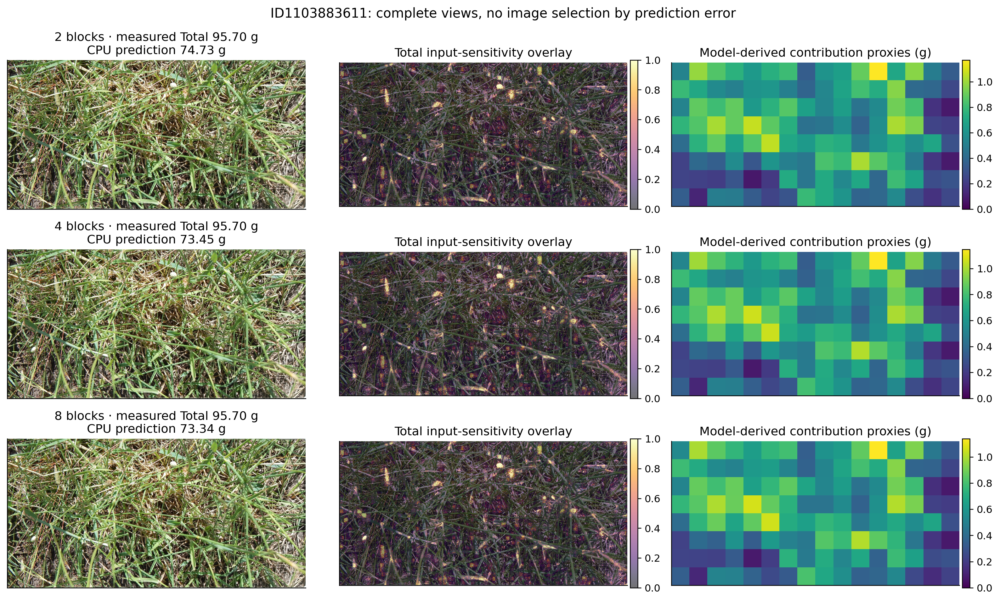
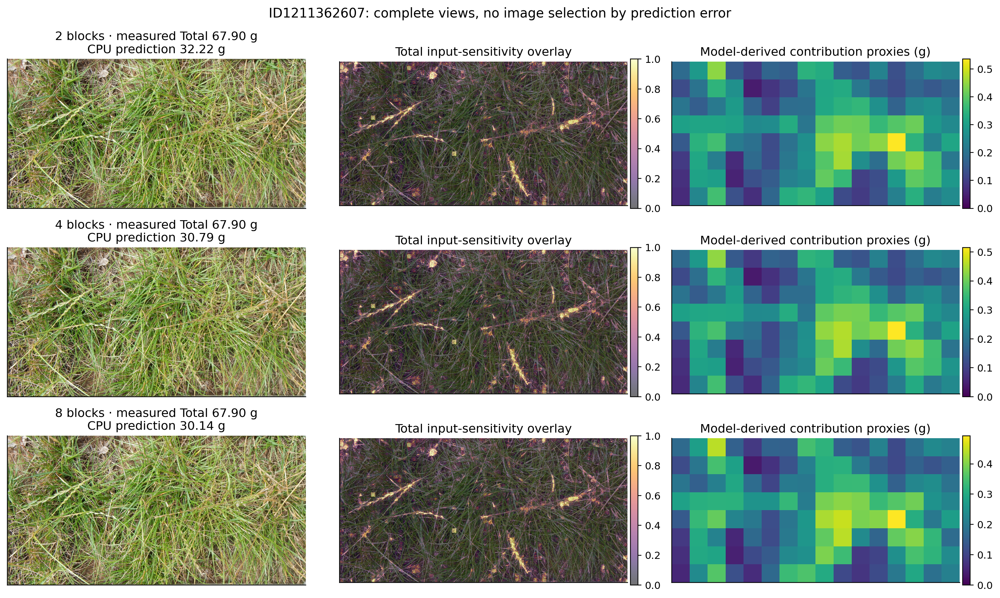
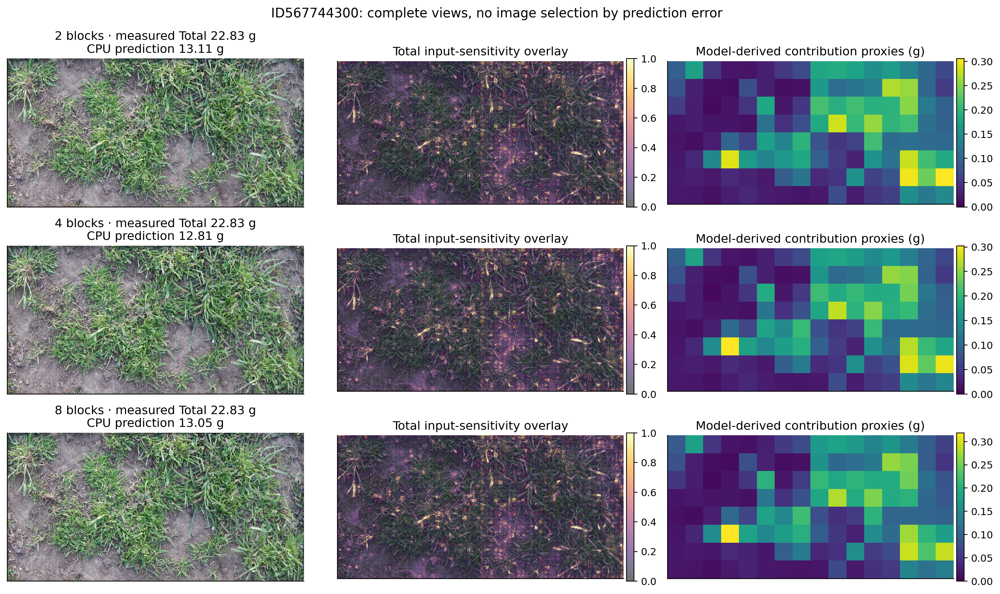
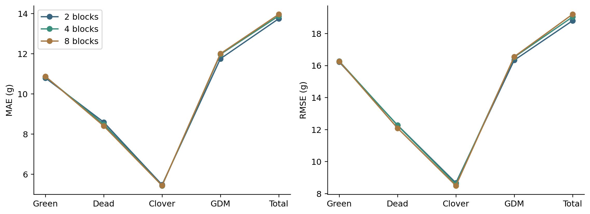
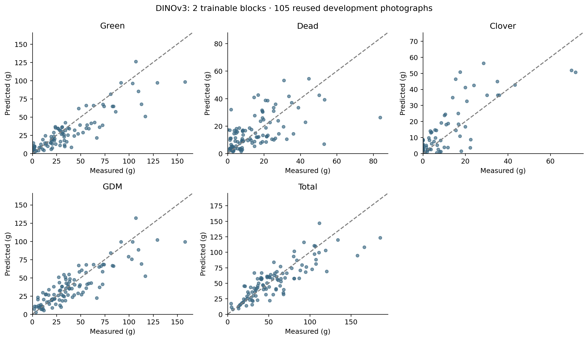
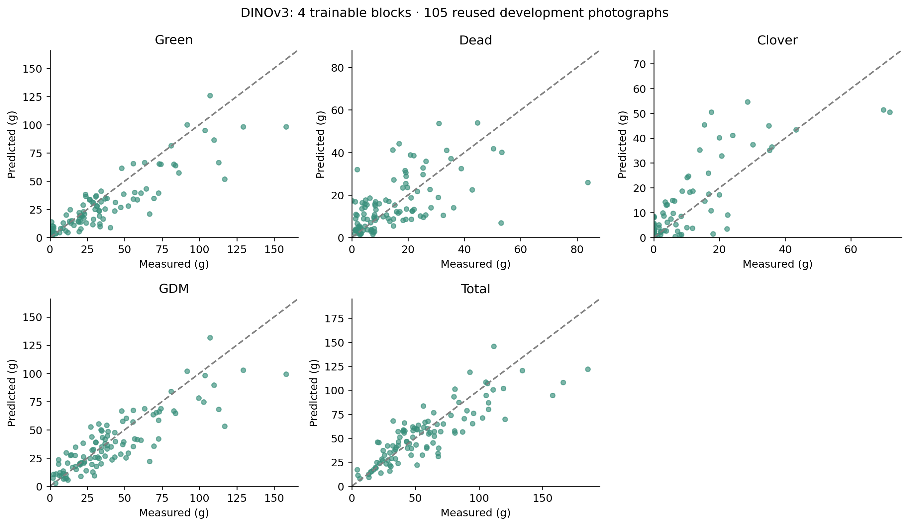
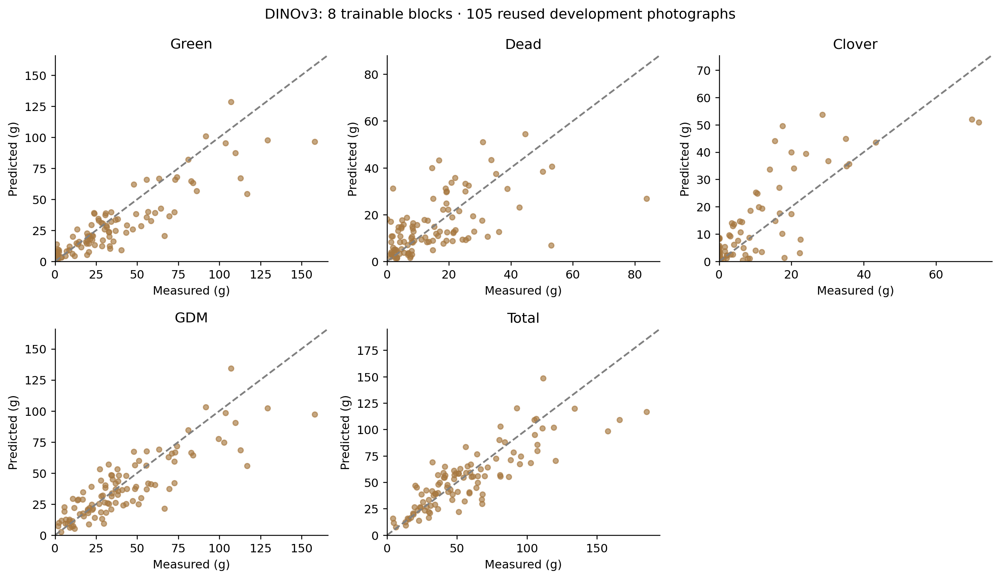
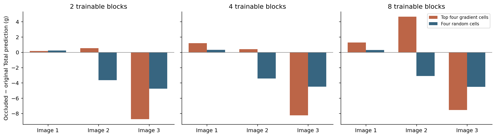

Three fixed randomly sampled development photographs. CPU FP32 input-sensitivity diagnostics; independently normalized overlays. Contribution proxies are model outputs, not local biomass measurements.







